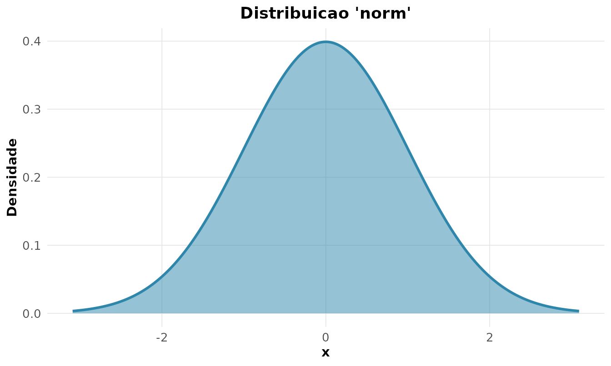
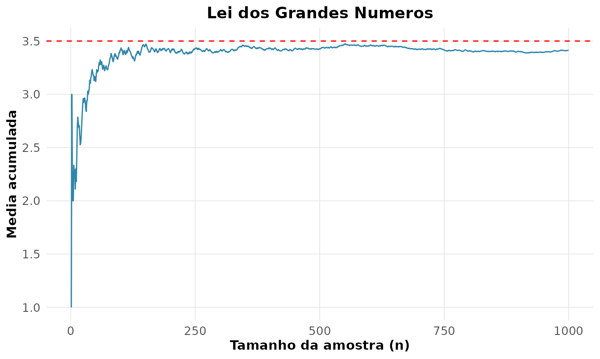
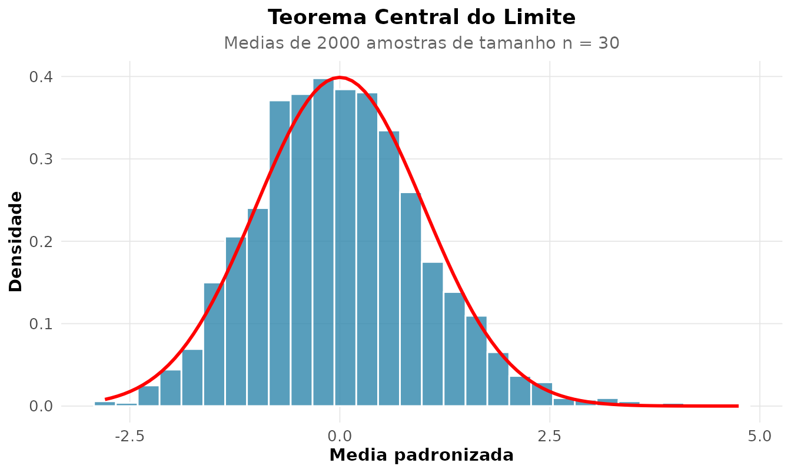

2. Probabilidade, Distribuicoes e os Teoremas Fundamentais
Source:vignettes/02-probabilidade.Rmd
02-probabilidade.RmdA ponte entre o acaso e os dados
Probabilidade e a linguagem que descreve a incerteza antes de observar os dados; a estatistica inverte a seta, indo dos dados as causas. Esta vinheta trata dos conceitos centrais dessa transicao: as distribuicoes, o Teorema de Bayes, a Lei dos Grandes Numeros e o Teorema Central do Limite.
Distribuicoes de probabilidade
Uma variavel aleatoria e descrita por sua distribuicao. O
rnp oferece uma familia consistente de funcoes
rnp_distribuicao_*, todas com os quatro verbos classicos:
d (densidade/massa), p (acumulada),
q (quantil), r (amostra).
# P(Z <= 1.96) para a Normal padrao
rnp_distribuicao_normal("p", q = 1.96)
#> [1] 0.9750021Visualizar a forma e meio caminho para entende-la:
rnp_grafico_distribuicao("norm", mean = 0, sd = 1)
Cada distribuicao modela um mecanismo gerador:
| Distribuicao | Modela | Exemplo |
|---|---|---|
| Binomial | nº de sucessos em ensaios | acertos em prova de multipla escolha |
| Poisson | contagens em intervalo fixo | chamadas por hora num call center |
| Normal | soma de muitos efeitos pequenos | erro de medicao |
| Exponencial | tempo ate o proximo evento | tempo entre falhas |
A esperanca e a variancia teoricas saem direto dos parametros:
rnp_esperanca_var("binom", size = 10, prob = 0.3)
#> # A tibble: 1 × 4
#> distribuicao esperanca variancia desvio
#> <chr> <dbl> <dbl> <dbl>
#> 1 binom 3 2.1 1.45Teorema de Bayes: a falacia da taxa-base
Poucos resultados sao tao contraintuitivos — e tao importantes — quanto Bayes. Considere um teste para uma doenca rara:
- Prevalencia: 1% da populacao tem a doenca.
- Sensibilidade: o teste acerta 99% dos doentes.
- Especificidade: 95% (logo, 5% de falsos positivos).
Pergunta: uma pessoa testou positivo. Qual a probabilidade de estar doente? A intuicao grita “99%”. A conta diz outra coisa:
rnp_bayes(
priori = c(doente = 0.01, sadio = 0.99),
verossimilhanca = c(0.99, 0.05) # P(+ | doente), P(+ | sadio)
)
#> # A tibble: 2 × 5
#> hipotese priori verossimilhanca conjunta posteriori
#> <chr> <dbl> <dbl> <dbl> <dbl>
#> 1 doente 0.01 0.99 0.0099 0.167
#> 2 sadio 0.99 0.05 0.0495 0.833A probabilidade a posteriori de estar doente e de apenas ~17%! O motivo: os sadios sao tao numerosos (99%) que seus 5% de falsos positivos inundam os verdadeiros positivos. Ignorar a prevalencia (a “taxa-base”) e um erro classico — de medicos a juris. Bayes nos obriga a combinar a evidencia (o teste) com o que ja sabiamos (a priori).
Lei dos Grandes Numeros: por que a media estabiliza
A LGN garante que a media amostral converge para a media populacional a medida que cresce. Nao e fe — e teorema. Vamos ver isso para o lancamento de um dado honesto (media teorica 3,5):
rnp_lei_grandes_numeros(function(n) sample(1:6, n, TRUE), media_teorica = 3.5)
A media acumulada oscila muito no inicio e vai se “colando” a linha vermelha. E por isso que cassinos lucram e pesquisas eleitorais funcionam: no agregado, o acaso individual se cancela.
Teorema Central do Limite
Se a LGN diz para onde a media vai, o TCL diz como ela chega la: a distribuicao da media amostral padronizada tende a uma Normal, qualquer que seja a distribuicao de origem (com variancia finita). E essa propriedade que explica a presenca da Normal em tantos contextos e que sustenta boa parte da inferencia (intervalos de confianca, testes t e z) mesmo quando os dados brutos nao sao normais.
Vamos partir de uma distribuicao deliberadamente assimetrica (exponencial) e observar a media de amostras de tamanho 30:
rnp_tcl_simulacao(function(n) rexp(n), n = 30, n_amostras = 2000)
O histograma das medias — partindo de algo nada normal — adere a curva Normal sobreposta. E esse resultado que autoriza tratar a media amostral como aproximadamente Normal, base de praticamente todos os intervalos de confianca da vinheta 3.
Simulacao de Monte Carlo
Quando a conta analitica e dificil, simula-se. Para estimar :
rnp_monte_carlo(function(x) x^2, limites = c(0, 1), n = 1e5)
#> # A tibble: 1 × 5
#> estimativa erro_padrao ic_inf ic_sup n
#> <dbl> <dbl> <dbl> <dbl> <dbl>
#> 1 0.334 0.0009 0.333 0.336 100000A estimativa cerca o valor verdadeiro (1/3) e ainda fornece um erro-padrao e um IC — Monte Carlo nao da apenas um numero, da uma medida da sua propria incerteza.
Ajustando uma distribuicao a dados reais
O conjunto faithful traz tempos reais de erupcao do
geiser Old Faithful. Sera que os intervalos de espera seguem
alguma distribuicao conhecida? Ajustamos por maxima verossimilhanca e
medimos a qualidade:
rnp_ajuste_distribuicao(faithful$waiting, dist = "norm")$qualidade
#> # A tibble: 1 × 5
#> log_veross aic bic ks_estatistica n
#> <dbl> <dbl> <dbl> <dbl> <int>
#> 1 -1095. 2195. 2202. 0.152 272A estatistica de Kolmogorov-Smirnov e o AIC quantificam o ajuste. (Spoiler: a espera do Old Faithful e na verdade bimodal — um unico ajuste Normal nao captura isso, o que se ve num histograma. Bom lembrete de que ajustar e sempre confrontar o modelo com os dados, nunca confiar cegamente num numero.)
Sintese
- Distribuicoes sao modelos de mecanismos geradores; conheca o mecanismo antes de escolher a distribuicao.
- Bayes combina evidencia e conhecimento previo; ignorar a taxa-base engana.
- LGN garante que medias estabilizam; TCL garante que elas viram Normais — a fundacao de toda a inferencia que vem a seguir.